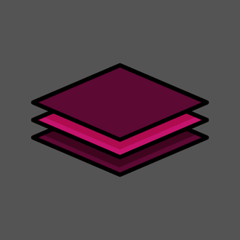

<mat-sidenav-container class="sidenav-container">
  <mat-sidenav #drawer class="sidenav" fixedInViewport [attr.role]="(isHandset$ | async) ? 'dialog' : 'navigation'"
    [mode]="(isHandset$ | async) ? 'over' : 'side'" [opened]="(isHandset$ | async) === false">
    <mat-toolbar style="color:#a28089;text-decoration: underline;font-weight: 500;"><span style="margin-left: 60px;letter-spacing:1.5px"> Menu</span></mat-toolbar>

    <span [hidden]="hide">
      <mat-nav-list>
        <mat-accordion>
          <mat-expansion-panel hideToggle>
            <mat-expansion-panel-header >
              <mat-panel-title style="color:  #a28089;" class="ExistingProjects">
                Existing Projects <mat-icon style="color: #a28089;" class="ExistingProjectsIcon">swap_vert</mat-icon>
              </mat-panel-title>
            </mat-expansion-panel-header>
            <mat-nav-list *ngFor="let list of this.backserv.loggedUser1.taskList">
              <a class="projectList" mat-list-item (click)="project(list.taskListName)"
                style="color: #a28089;">{{list.taskListName}}
                <span style="margin-left: auto">
                  <button mat-icon-button  [matMenuTriggerFor]="menu">
                    <mat-icon style="float: right;">more_vert</mat-icon>
                  </button>
                  <mat-menu #menu="matMenu">
                    <button mat-menu-item style="color:#a28089 ;" (click)="dashboard.updateProject(list.taskListName)">
                      <mat-icon style="color:#a28089 ;" >edit</mat-icon>Edit
                    </button>
                    <button  mat-menu-item style="color:#a28089 ;" [mat-menu-trigger-for]="priority">
                      <mat-icon style="color:#a28089 ;">filter_list</mat-icon>Filter
                    </button>
                    <mat-menu #priority>
                      <button mat-menu-item style="color:yellow" (click)="filterHigh()">HIGH<mat-icon style="color:yellow">flag</mat-icon></button>
                      <button mat-menu-item style="color: yellowgreen;" (click)="filterLow()">LOW<mat-icon style="color: yellowgreen;">flag</mat-icon></button>
                      <button mat-menu-item style="color: red;" (click)="filterUrgent()">URGENT<mat-icon style="color: red;">flag</mat-icon></button>
                      <button mat-menu-item style="color: green;" (click)="filterNormal()">NORMAL<mat-icon style="color: green;">flag</mat-icon></button>
                      <button mat-menu-item (click)="filterNone()">NONE</button>
                    </mat-menu>
                    <button mat-menu-item (click)="dashboard.deleteProject(list.taskListName)" style="color:#a28089 ;">
                      <mat-icon  style="color:#a28089 ;">delete</mat-icon>Delete
                    </button>
                  </mat-menu>
                </span></a>
                
            </mat-nav-list>
            <button mat-raised-button style="width:150px; height:40px; " (click)="addTask()" class="addtask">Add Task<mat-icon class="addtaskIcon">add</mat-icon></button>
          </mat-expansion-panel>
          
        </mat-accordion>
        
      </mat-nav-list>
      
      <mat-nav-list>
        <mat-nav-list class="createNew"><a mat-list-item (click)="add()" class="CreateNewTask">Create new project
            <mat-icon class="CreateNewTaskIcon">add_circle_outline</mat-icon></a></mat-nav-list>
      </mat-nav-list>
    </span>
  </mat-sidenav>
  <mat-sidenav-content>
    <mat-toolbar color="primary" style="flex-wrap: wrap; float: left; background: #a28089;">
      <button type="button" aria-label="Toggle sidenav" mat-icon-button (click)="drawer.toggle()" *ngIf="isHandset$"
        style="color:black;">
        <mat-icon aria-label="Side nav toggle icon">menu</mat-icon>
      </button>
      <span style="color:black">TaskBee</span>
      <span [hidden]="hide"><button mat-button matTooltip="logout" (click)="logout()" style="margin-left:1000px;"
          class="logout">
          <mat-icon style="color: black;">exit_to_app</mat-icon>
        </button></span>
    </mat-toolbar>
    <app-dashboardcomp #dashboard></app-dashboardcomp>
  </mat-sidenav-content>
</mat-sidenav-container>